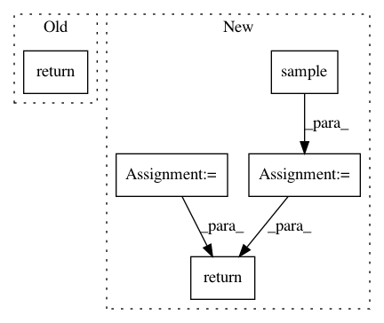

0c81011805c9ab4d6f7f314f674d39e51f5ba8eb,Tars/losses/gan_loss.py,GANLoss,estimate,#GANLoss#Any#Any#,26
Before Change
sample_data = get_dict_values(sample_data_dict, self.d.var)[0]
return self.d_criterion(sample_data, sample) // TODO: detach
return self.g_criterion(sample)
@staticmethod
def d_criterion(sample_data, sample):
return - torch.log(sample_data) - torch.log(1 - sample)
After Change
x_dict = self._p2.sample(batch_size=batch_size)
// set labels
t_data = torch.ones(batch_size, 1).to(x_data.device)
t = torch.zeros(batch_size, 1).to(x_data.device)
if discriminator:
// sample y from x_data
y_data_dict = self.d.sample(x_data_dict)
y_data = get_dict_values(y_data_dict, self.d.var)[0]
// sample y from x
y_dict = self.d.sample(x_dict) // TODO: detach x_dict
y = get_dict_values(y_dict, self.d.var)[0]
return self.bce_loss(y_data, t_data) + self.bce_loss(y, t)
// sample y from x
y_dict = self.d.sample(x_dict)
y = get_dict_values(y_dict, self.d.var)[0]
return self.bce_loss(y, t_data)
def train(self, train_x, **kwargs):
self.d.train()
In pattern: SUPERPATTERN
Frequency: 5
Non-data size: 5
Instances
Project Name: masa-su/pixyz
Commit Name: 0c81011805c9ab4d6f7f314f674d39e51f5ba8eb
Time: 2018-10-30
Author: masa@weblab.t.u-tokyo.ac.jp
File Name: Tars/losses/gan_loss.py
Class Name: GANLoss
Method Name: estimate
Project Name: pyprob/pyprob
Commit Name: 1c758ba9d6c14d9b9d3599e44c3508e2692d8d35
Time: 2018-09-28
Author: atilimgunes.baydin@gmail.com
File Name: pyprob/distributions/empirical.py
Class Name: Empirical
Method Name: sample
Project Name: kengz/SLM-Lab
Commit Name: 5a126fc7cac272dfe2514554ef228001c795d729
Time: 2019-08-03
Author: kengzwl@gmail.com
File Name: slm_lab/agent/algorithm/sac.py
Class Name: SoftActorCritic
Method Name: act
Project Name: havakv/pycox
Commit Name: 6671f9d02fc5e90d3d64dfa7bf4f9f9abd0826f1
Time: 2019-02-19
Author: haavard.kvamme@gmail..com
File Name: pycox/models/cox_cc.py
Class Name: CoxTime
Method Name: compute_baseline_hazards
Project Name: uber/pyro
Commit Name: f81c70c85ca6a2cbf9adb31d26ccc49007d5a335
Time: 2020-05-19
Author: fritzo@uber.com
File Name: pyro/distributions/torch.py
Class Name: Binomial
Method Name: sample